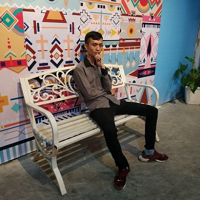
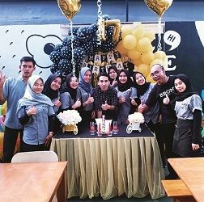

About Us
Berada di lokasi strategis di pusat kota, tepatnya di jalan Otto Iskandar Dinata. Jalan ini juga menjadi perlintasan kendaraan luar kota yang keluar dari pintu tol Subang menuju daerah wisata Ciater dan Bandung. Kedai ini tidak jarang banyak disinggahi kendaraan luar kota untuk sekedar beristirahat dan mengatasi rasa lapar. Tempat ini memiliki desain interior yang cukup nyentrik dengan konsep tempat tongkrongan anak muda. Ada sekitar 243 menu yang disajikan Follow Mie yang dapat dipilih pengunjungnya. Yaitu mie dengan berbagai pilihan topping, roti bakar, pisang dan singkong, steak, snack, pizza, sandwich dan burger. Tersedia juga tersedia coffee dengan berbagai varian rasa, Juice, dan Ice Cream.
Follow Mie pun memiliki berbagai area yang bisa kita pilih untuk duduk nongkrong, yakni area makan, dimana diruangan ini memiliki lebih banyak meja dan kursi di banding area lainnya, seperti area taman, dan area lesehan.

